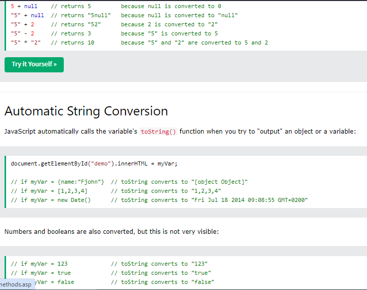

JavaScript Arithmetic Operators
Arithmetic operators perform arithmetic on numbers (literals or variables).
Operator Description
+ Addition
- Subtraction
* Multiplication
** Exponentiation (ES2016)
/ Division
% Modulus (Remainder)
++ Increment
-- Decrement
Comparison Operators
Comparison operators are used in logical statements to determine equality or difference between variables or values.

JavaScript Type Conversion
JavaScript variables can be converted to a new variable and another data type:
By the use of a JavaScript function
Automatically by JavaScript itself
Converting Strings to Numbers
The global method Number() converts a variable (or a value) into a number.
A numeric string (like "3.14") converts to a number (like 3.14).
An empty string (like "") converts to 0.
A non numeric string (like "John") converts to NaN (Not a Number).
The Number() Method
The Number() metod converts a variable (or value) into a number:
Converting Numbers to Strings
The global method String() can convert numbers to strings.
It can be used on any type of numbers, literals, variables, or expressions:
String(x) // returns a string from a number variable x
String(123) // returns a string from a number literal 123
String(100 + 23) // returns a string from a number from an expression
The Number method toString() does the same.
x.toString()
(123).toString()
(100 + 23).toString()
Converting Dates to Numbers
The global method Number() can be used to convert dates to numbers.
d = new Date();
Number(d) // returns 1404568027739
The date method getTime() does the same.
d = new Date();
d.getTime() // returns 1404568027739
Converting Dates to Strings
The global method String() can convert dates to strings.
String(Date()) // returns "Thu Jul 17 2014 15:38:19 GMT+0200 (W. Europe Daylight Time)"
The Date method toString() does the same.
Example
Date().toString() // returns "Thu Jul 17 2014 15:38:19 GMT+0200 (W. Europe Daylight Time)"


Automatic Type Conversion
When JavaScript tries to operate on a "wrong" data type, it will try to convert the value to a "right" type.
The result is not always what you expect:
